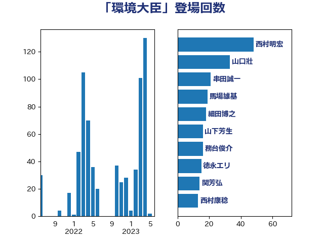

単語「環境大臣」

| 小泉進次郎 | 自由民主党 | 92 回 |
| 徳永エリ | 立憲民主党 | 53 回 |
| 串田誠一 | 日本維新の会 | 48 回 |
| 山下芳生 | 日本共産党 | 45 回 |
| 山口壯 | 自由民主党 | 33 回 |
| 石原宏高 | 自由民主党 | 21 回 |
| 源馬謙太郎 | 立憲民主党 | 18 回 |
| 長浜博行 | 無所属 | 17 回 |
| 馬場雄基 | 立憲民主党 | 16 回 |
| 関芳弘 | 自由民主党 | 14 回 |
| 音喜多駿 | 日本維新の会 | 13 回 |
| 田村貴昭 | 日本共産党 | 12 回 |
| 細田博之 | 自由民主党 | 12 回 |
| 猪口邦子 | 自由民主党 | 10 回 |
| 梅村みずほ | 日本維新の会 | 8 回 |
| 大岡敏孝 | 自由民主党 | 7 回 |
| 山崎誠 | 立憲民主党 | 7 回 |
| 岸田文雄 | 自由民主党 | 7 回 |
| 田嶋要 | 立憲民主党 | 7 回 |
| 務台俊介 | 自由民主党 | 6 回 |
| 斉藤鉄夫 | 公明党 | 6 回 |
| 梶山弘志 | 自由民主党 | 6 回 |
| 秋本真利 | 自由民主党 | 6 回 |
| 篠原孝 | 立憲民主党 | 6 回 |
| 芳賀道也 | 国民民主党 | 6 回 |
| 古賀之士 | 立憲民主党 | 5 回 |
| 寺田静 | 無所属 | 5 回 |
| 紙智子 | 日本共産党 | 5 回 |
| 青木愛 | 立憲民主党 | 5 回 |
| 鬼木誠 | 立憲民主党 | 5 回 |
| 小宮山泰子 | 立憲民主党 | 4 回 |
| 小沼巧 | 立憲民主党 | 4 回 |
| 岩渕友 | 日本共産党 | 4 回 |
| 早坂敦 | 日本維新の会 | 4 回 |
| 池畑浩太朗 | 日本維新の会 | 4 回 |
| 浜口誠 | 国民民主党 | 4 回 |
| 海江田万里 | 立憲民主党 | 4 回 |
| 細野豪志 | 自由民主党 | 4 回 |
| 菅義偉 | 自由民主党 | 4 回 |
| 足立康史 | 日本維新の会 | 4 回 |
| 山東昭子 | 自由民主党 | 3 回 |
| 柚木道義 | 立憲民主党 | 3 回 |
| 森まさこ | 自由民主党 | 3 回 |
| 清水貴之 | 日本維新の会 | 3 回 |
| 穂坂泰 | 自由民主党 | 3 回 |
| 竹谷とし子 | 公明党 | 3 回 |
| 西銘恒三郎 | 自由民主党 | 3 回 |
| 近藤昭一 | 立憲民主党 | 3 回 |
| 高木毅 | 自由民主党 | 3 回 |
| 齋藤健 | 自由民主党 | 3 回 |
| 三木亨 | 自由民主党 | 2 回 |
| 中島克仁 | 立憲民主党 | 2 回 |
| 中川康洋 | 公明党 | 2 回 |
| 伊藤孝江 | 公明党 | 2 回 |
| 佐藤正久 | 自由民主党 | 2 回 |
| 古川元久 | 国民民主党 | 2 回 |
| 堀内詔子 | 自由民主党 | 2 回 |
| 塩村あやか | 立憲民主党 | 2 回 |
| 大西健介 | 立憲民主党 | 2 回 |
| 山岡達丸 | 立憲民主党 | 2 回 |
| 山本順三 | 自由民主党 | 2 回 |
| 岡田克也 | 立憲民主党 | 2 回 |
| 斎藤アレックス | 国民民主党 | 2 回 |
| 枝野幸男 | 立憲民主党 | 2 回 |
| 横沢高徳 | 立憲民主党 | 2 回 |
| 比嘉奈津美 | 自由民主党 | 2 回 |
| 河野義博 | 公明党 | 2 回 |
| 滝沢求 | 自由民主党 | 2 回 |
| 片山大介 | 日本維新の会 | 2 回 |
| 玉木雄一郎 | 国民民主党 | 2 回 |
| 石井苗子 | 日本維新の会 | 2 回 |
| 礒崎哲史 | 国民民主党 | 2 回 |
| 秋野公造 | 公明党 | 2 回 |
| 若松謙維 | 公明党 | 2 回 |
| 進藤金日子 | 自由民主党 | 2 回 |
| 重徳和彦 | 立憲民主党 | 2 回 |
| 長谷川岳 | 自由民主党 | 2 回 |
| 鷲尾英一郎 | 自由民主党 | 2 回 |
| 下村博文 | 自由民主党 | 1 回 |
| 中川宏昌 | 公明党 | 1 回 |
| 中川郁子 | 自由民主党 | 1 回 |
| 丸川珠代 | 自由民主党 | 1 回 |
| 伴野豊 | 立憲民主党 | 1 回 |
| 住吉寛紀 | 日本維新の会 | 1 回 |
| 加藤鮎子 | 自由民主党 | 1 回 |
| 勝俣孝明 | 自由民主党 | 1 回 |
| 和田有一朗 | 日本維新の会 | 1 回 |
| 嘉田由紀子 | 無所属 | 1 回 |
| 土屋品子 | 自由民主党 | 1 回 |
| 安達澄 | 無所属 | 1 回 |
| 宮本徹 | 日本共産党 | 1 回 |
| 小渕優子 | 自由民主党 | 1 回 |
| 小熊慎司 | 立憲民主党 | 1 回 |
| 平山佐知子 | 無所属 | 1 回 |
| 杉田水脈 | 自由民主党 | 1 回 |
| 東国幹 | 自由民主党 | 1 回 |
| 松木けんこう | 立憲民主党 | 1 回 |
| 松沢成文 | 日本維新の会 | 1 回 |
| 横山信一 | 公明党 | 1 回 |
| 河西宏一 | 公明党 | 1 回 |
| 浦野靖人 | 日本維新の会 | 1 回 |
| 渡辺博道 | 自由民主党 | 1 回 |
| 漆間譲司 | 日本維新の会 | 1 回 |
| 牧原秀樹 | 自由民主党 | 1 回 |
| 矢倉克夫 | 公明党 | 1 回 |
| 石井啓一 | 公明党 | 1 回 |
| 石井準一 | 自由民主党 | 1 回 |
| 石井章 | 日本維新の会 | 1 回 |
| 石川大我 | 立憲民主党 | 1 回 |
| 福田昭夫 | 立憲民主党 | 1 回 |
| 穀田恵二 | 日本共産党 | 1 回 |
| 舟山康江 | 国民民主党 | 1 回 |
| 菅家一郎 | 自由民主党 | 1 回 |
| 藤川政人 | 自由民主党 | 1 回 |
| 西田昌司 | 自由民主党 | 1 回 |
| 西田昭二 | 自由民主党 | 1 回 |
| 谷公一 | 自由民主党 | 1 回 |
| 谷合正明 | 公明党 | 1 回 |
| 赤羽一嘉 | 公明党 | 1 回 |
| 遠藤良太 | 日本維新の会 | 1 回 |
| 里見隆治 | 公明党 | 1 回 |
| 野村哲郎 | 自由民主党 | 1 回 |
| 関口昌一 | 自由民主党 | 1 回 |
| 阿部知子 | 立憲民主党 | 1 回 |
| 高橋千鶴子 | 日本共産党 | 1 回 |